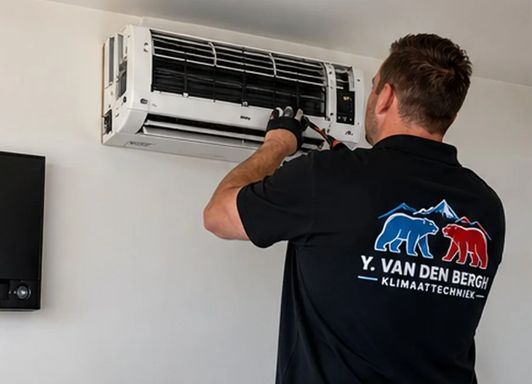

Het bedrijf
Over Y. van den Bergh Klimaattechniek
Persoonlijk contact en aandacht voor een passende klimaatoplossing.

Airconditioning en ventilatie met aandacht voor uw wensen
Y. van den Bergh Klimaattechniek richt zich op advies, installatie en onderhoud van airconditioning en ventilatie.
Of het nu gaat om een oplossing voor thuis of voor een zakelijke ruimte: een goede afstemming op de situatie staat centraal.
Wilt u weten wat er mogelijk is? Neem contact op om uw wensen te bespreken.
Neem contact op →